持续修改中………..
如果你开始频繁地思考人生、生命的意义，那么也许你最近过得并不快乐。
5.16
记得之前我说要用yolov5模型来做细胞图像识别的时候，朋友和我说了一个点，就是为什么不用最现今的模型来做。一般情况下最先进的模型是克服了以往模型的一些缺点和局限的。我想他说的也有道理，于是吭哧吭哧地去看yolov8.但是这好像是一个误区。2018年的yolov3也被用到了2023年的深度学习方向的论文里。在硬件加速领域2023年的论文用的普遍是较早版本的模型，如2016年的vgg16.
另外关于数据集，并不一定要自己制作，开源数据集例如BCCD也是被很多人使用的。
5.14
上午，尝试看tcl脚本，看了ps-pl端通信方法，b站教程。还是不清楚
下午继续看在pynq上实现yolov2-tiny这个项目
pynq v2.5版本
1、在vivado中使用tcl脚本生成bitstream文件
2、要把.bit和.hwh文件都复制到开发板上！.hwh文件找不到直接在工程文件夹下搜索。
3、解决一个错误：参考方法RuntimeError: Failed to allocate Memory!
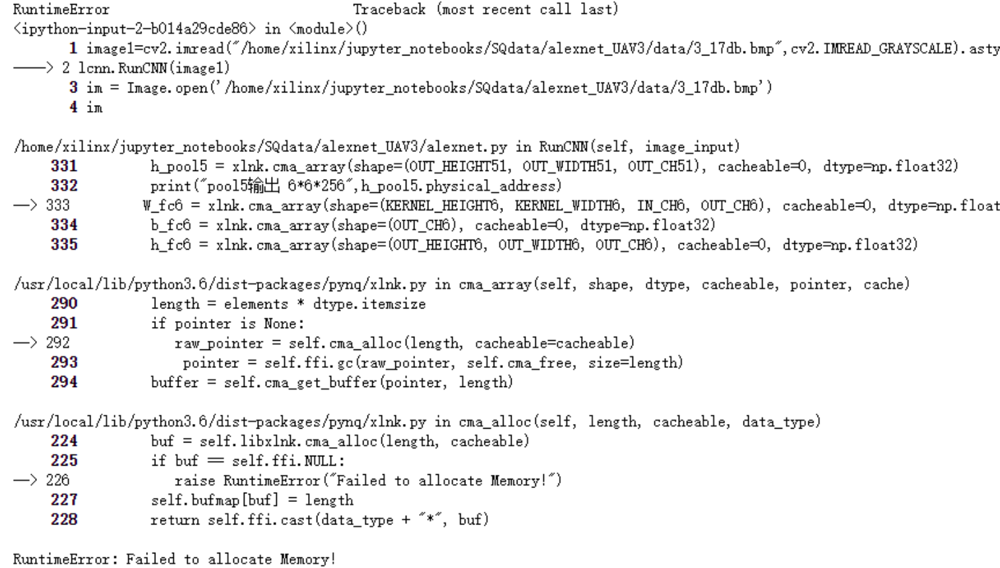解决方法：在shell中输入echo 1 > /proc/sys/vm/overcommit_memory
5.13
没写日记的那天，说明没有emo

5.11
雨天。上午呆在宿舍学习，中午点了外卖，这个蛋是生的，温泉蛋，不敢吃。
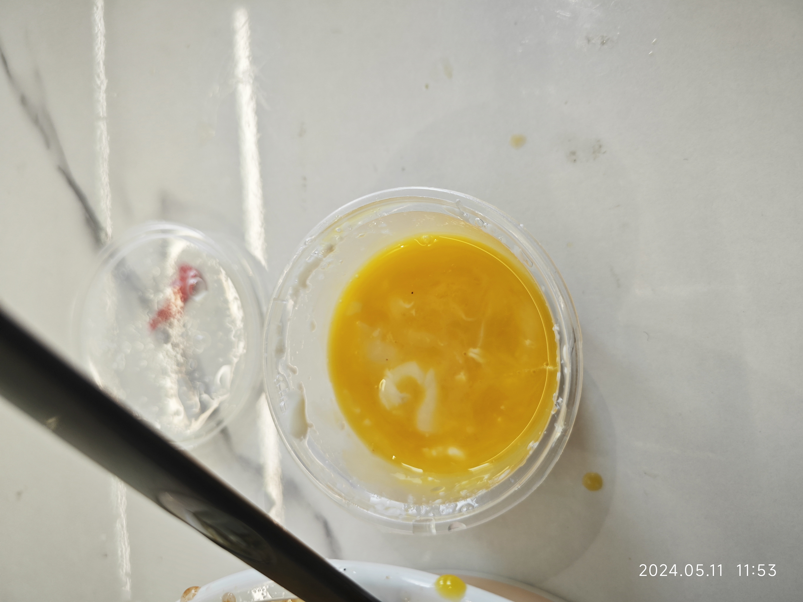 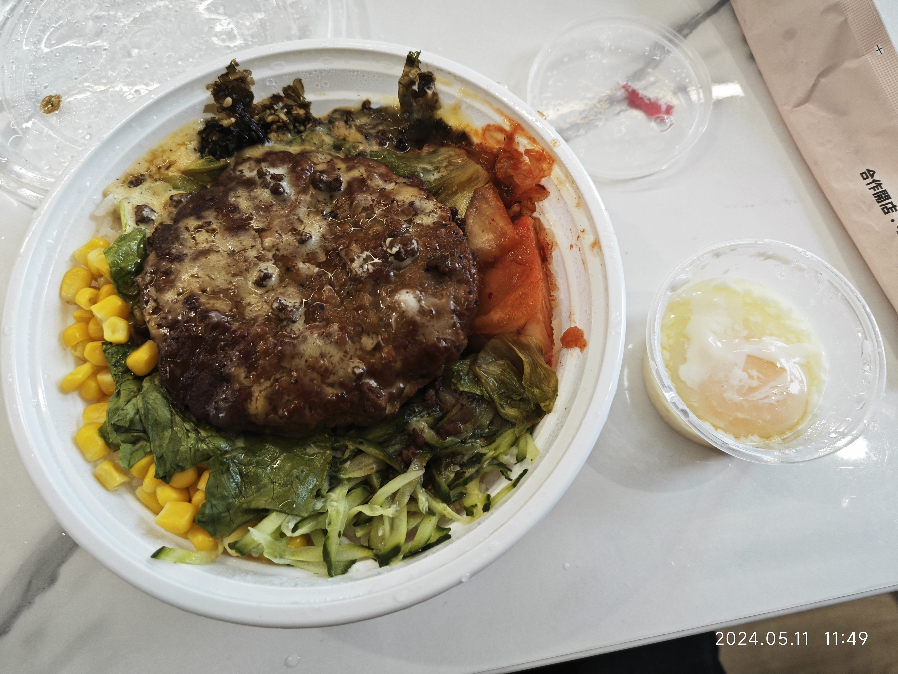下午，看pynq上实现yolov2的源码，HLS部分，关于怎么在python中识别出pl端是否完成了计算，这部分还是有些模糊。
4点半出去买晚饭

还是吃水果，但是没买肉，晚点再出去吃肉。
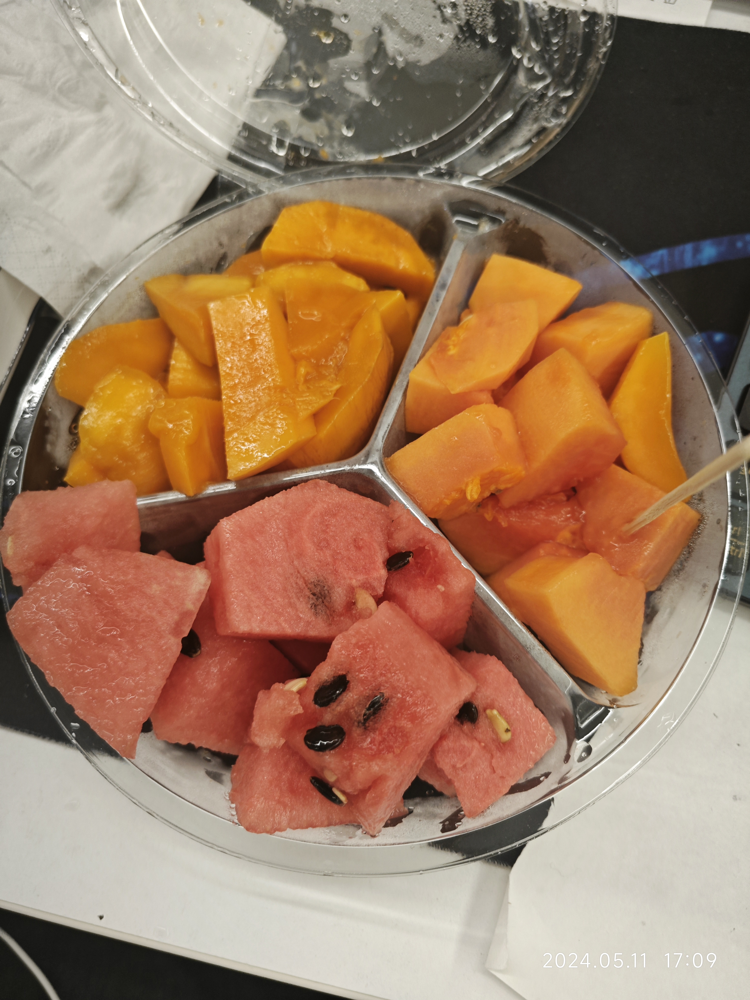5.10
差不多1：30之后睡着，7：40出门

下午16：00回宿舍洗头。17：00之后出去外面买饭。

马路对面的麦当劳今天开业了。进去看了看，好多人。
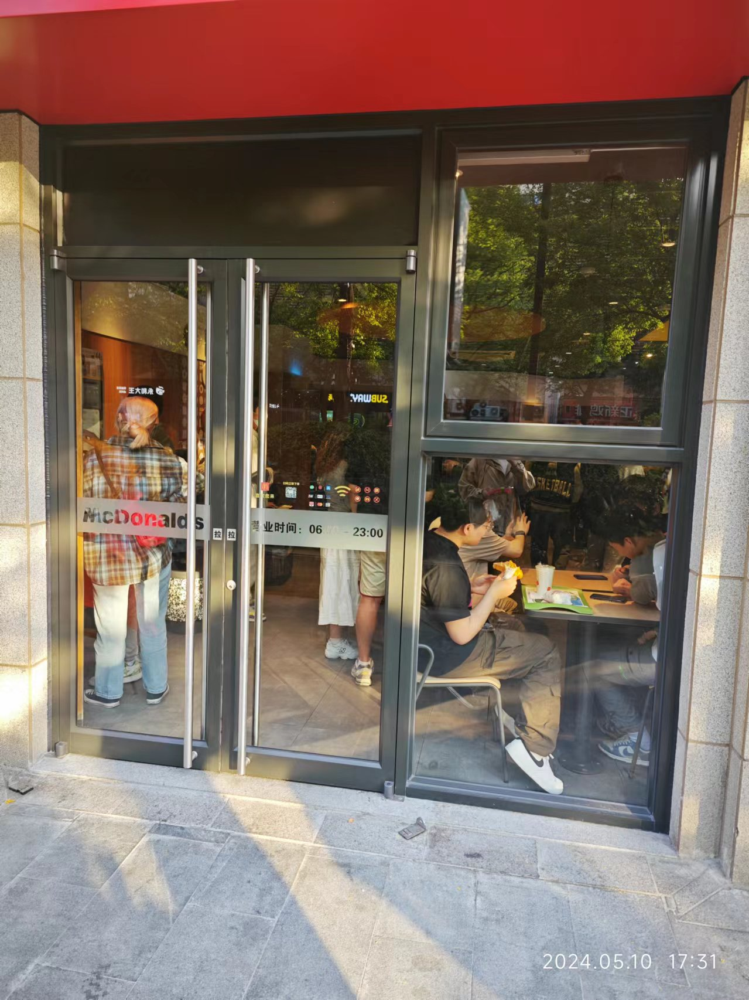最后还是买了标准套餐，一盒西瓜加上一个手枪腿。今天全家的小姐姐特别开朗。
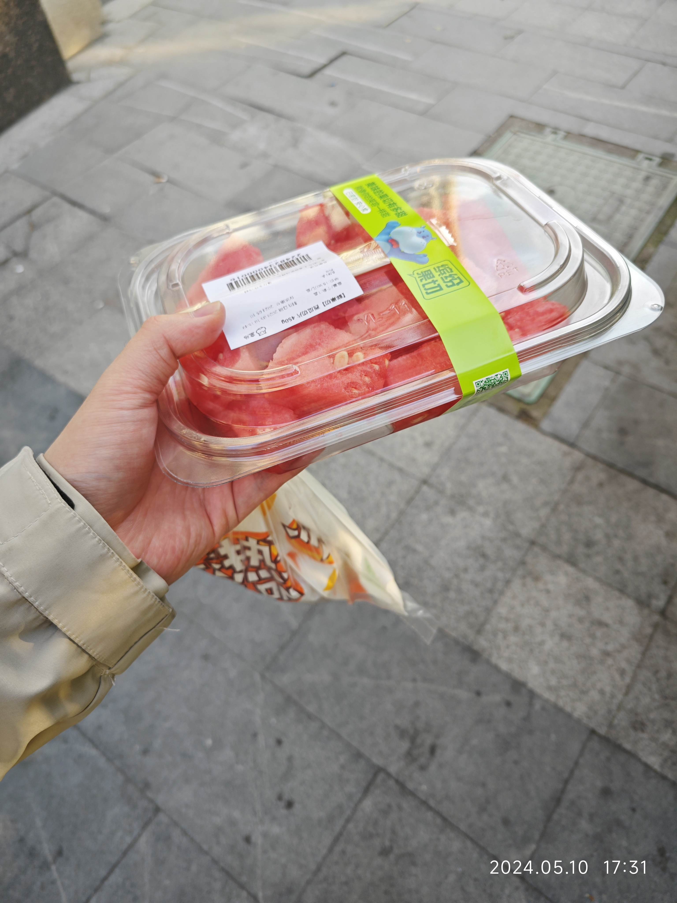 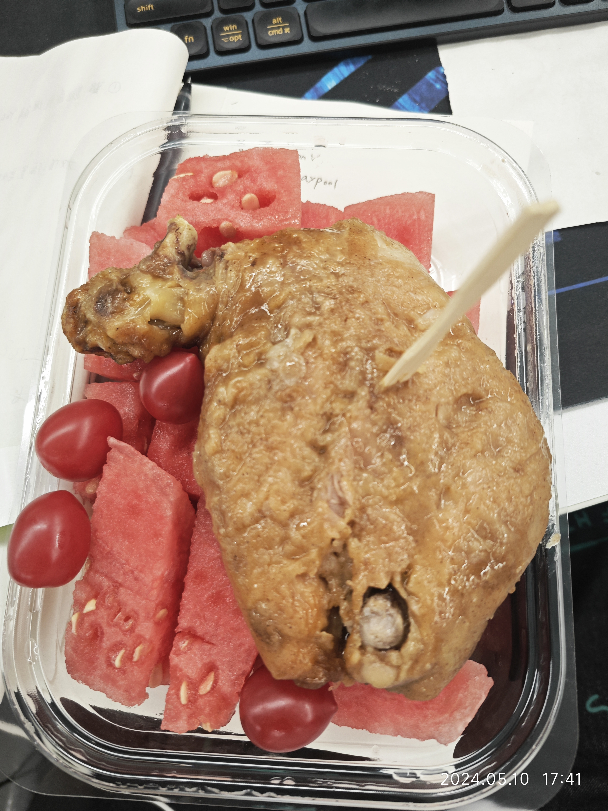5.9
23：09
emo，学业不顺利，生活一团糟。烦心事，跟秋天的落叶一样多。
但愿我能化作夜。
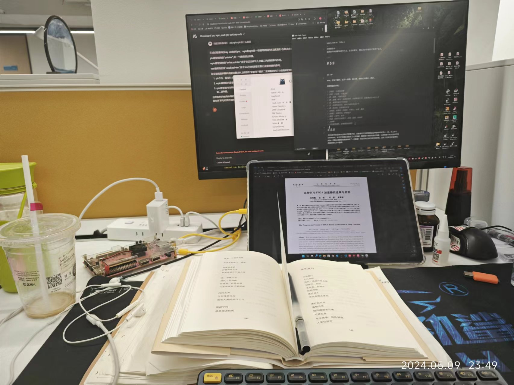淡橙红，大男孩用情
淡绿，小女孩，不着边际
紫，自尊，不复作他想
黄，蛮横，稚气；金黄是帝君，柠檬黄是王子，稻麦黄是古早的人性
蓝，智慧和消沉了的热诚
白，压倒性的无为，宽宏大量的杀伐之气
黑，攻击性，在绝望中求生
古铜色，思想家；淡咖啡，平常心；米黄，善良
玫瑰红，得意非凡，娇艳独步
青莲，小家气，妖气
钴蓝，闷闷不乐的君子，多情，独身，安那其
土黄傻
灰色是旁观色，在偷看别的颜色
快到明天了，该回去了。
5.8
今天8点15左右到办公室比平时晚了点，去食堂买了份早饭我还记得要帮同学带上一份。早上学了emmmmm，中午不太饿去全家买了大炸鸡腿，推荐那个油炸的脆皮鸡腿，以前我都不吃外面炸的鸡皮有一天晚上很饿狼吞虎咽得吃了一口真香！再也没吃过奥尔良口味的啦。还吃了同学给的香蕉和他洗好的几个小番茄。
今天的天空很美，就像宫崎骏动画里的蓝天和像棉花糖般软绵绵的白云，好想做躺在草坪的喵懒洋洋的晒着太阳被投喂的。


我的钙片到了 谁敢相信我年纪轻轻已经吃上了钙片！看来还是要多晒晒太阳走动走动，大概是平时坐在工位上太久了骨质疏松。（此处附上钙片图）。今天下午学习中途我还眯了20分钟被微信提示声吵醒，我的同学强行让我关掉了微信提示声，心无旁骛的学习，冲呀。
今晚食堂吃到了还不错的肉，我觉得口感还是有点偏甜，在食堂能吃到这样的菜已经心满意足啦要求不能太高。
晚上去外面散步了，走了一小段我也没走过的路，我的嘉定地图又绘制了一部分，走到了州桥老街，陪同学逛了一家女孩子气满满的精品店，里面东西摆放的琳琅满目，有女孩子花花绿绿的帆布袋（看上去还挺漂亮的）还有很多不便宜的贴纸。

回来的路上看到了很美丽的夜色，有渐变色的天空可惜手机拍不出它的美丽，还有深蓝无暇的天空，今天走的有点远还带了一个一直喊累的拖油瓶同学，回来微微出汗决定先洗澡再学习。晚上我需要复习接下来考试的内容，太卷了难度好大但还是希望一切顺利，只要能去实习多远的路每天起早打卡，开车往返，倒贴钱我都愿意！求求了
 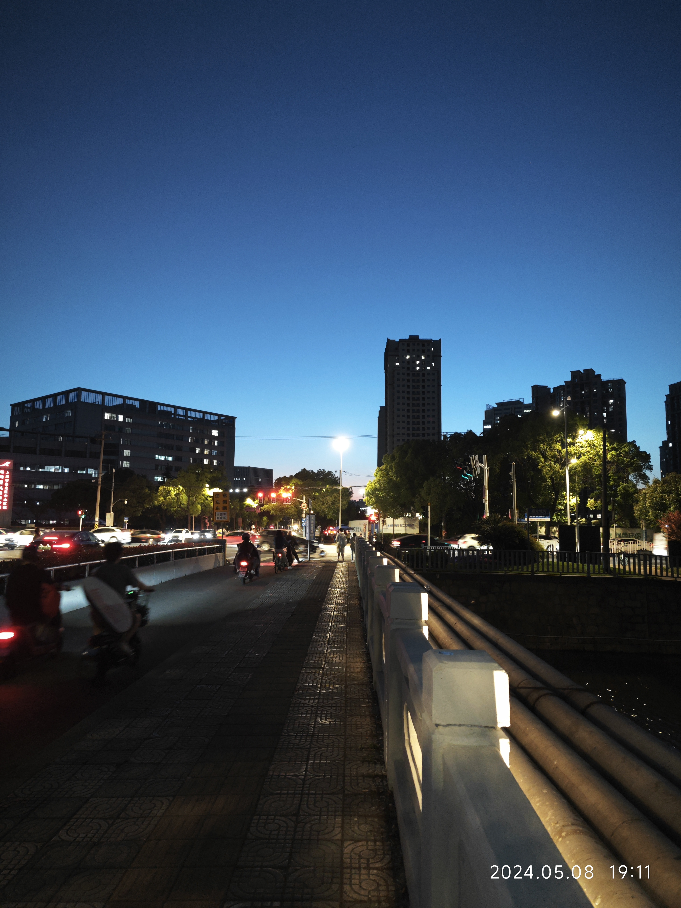
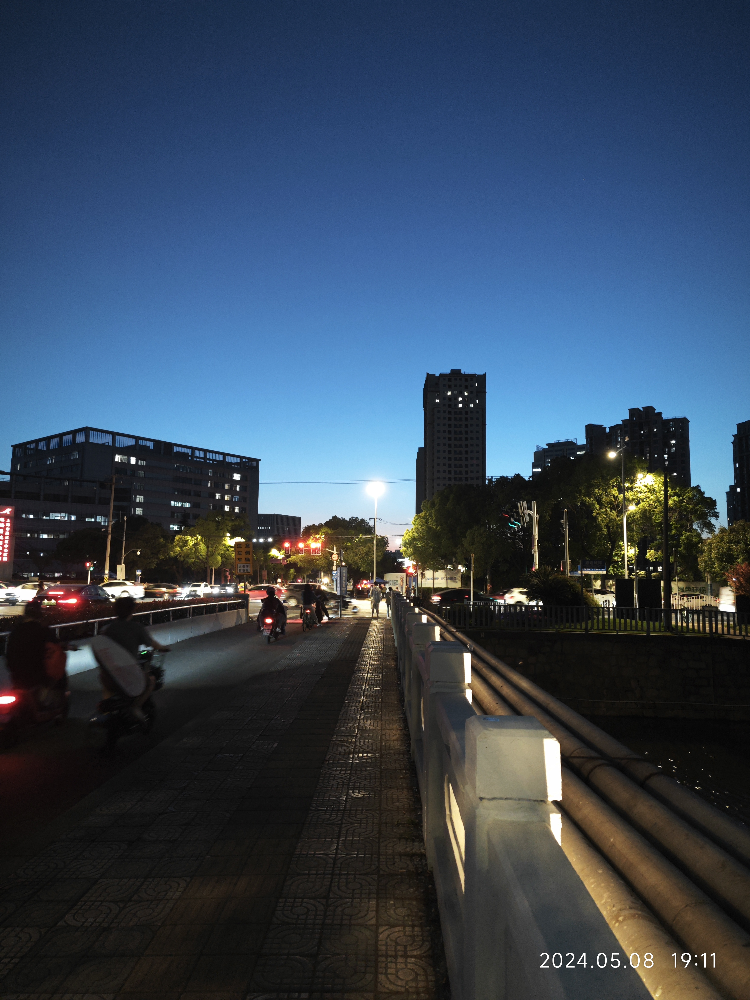
PS：最近要开始实习笔试了，然而过去一直处于边学边忘的状态，是时候开始准备起来了，简单写一个计划吧。
最近每晚：
19：20-21：30：刷《备战秋招-基础知识》
21：30-23：00：刷【收藏】FPGA数字IC基础刷题Verilog代码及讲解（状态机、跨时钟、同步/异步FIFO、DMUX、奇数/小数分频）
23：00-23：30：刷QQ。
刷完再另作计划。
5.7
起床-学习-中饭-学习
下午太饿了，出去吃根脆骨丸子。
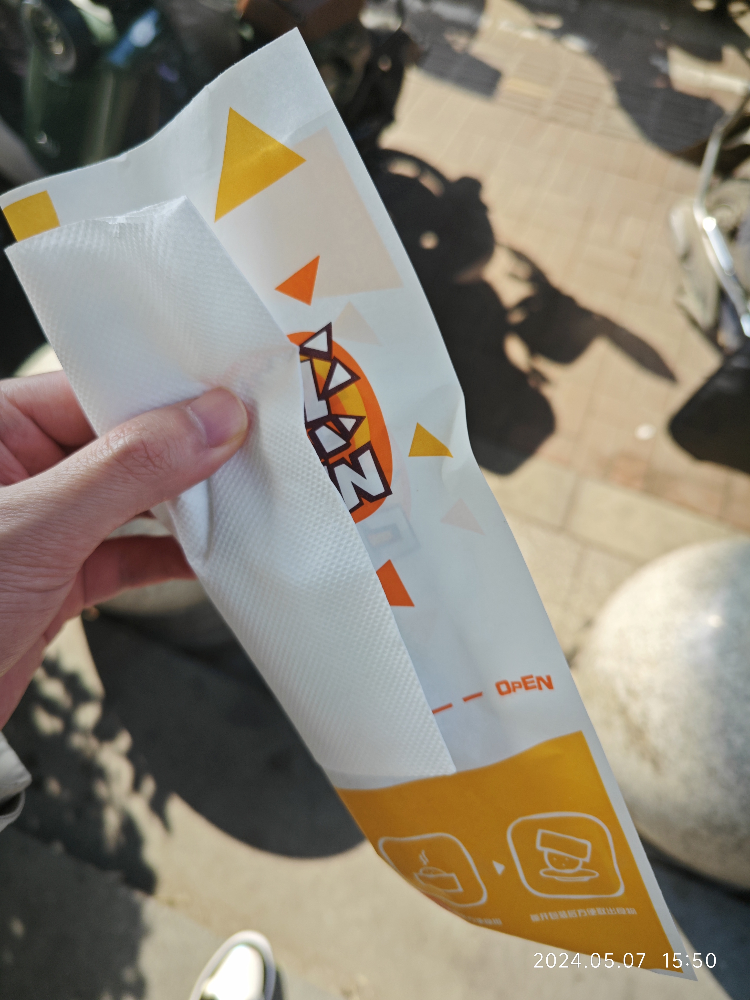
晚上买了一盒蛋挞，蔬菜沙拉，吃了点同学的冷面？好像是叫冷面？另外收到了一份精致的礼物，是一个香薰挂件！！我一直相信别人送的礼物可以带来好运，决定把他挂在我最爱的电脑上了，希望我的电脑能给力点，不要再蓝屏了。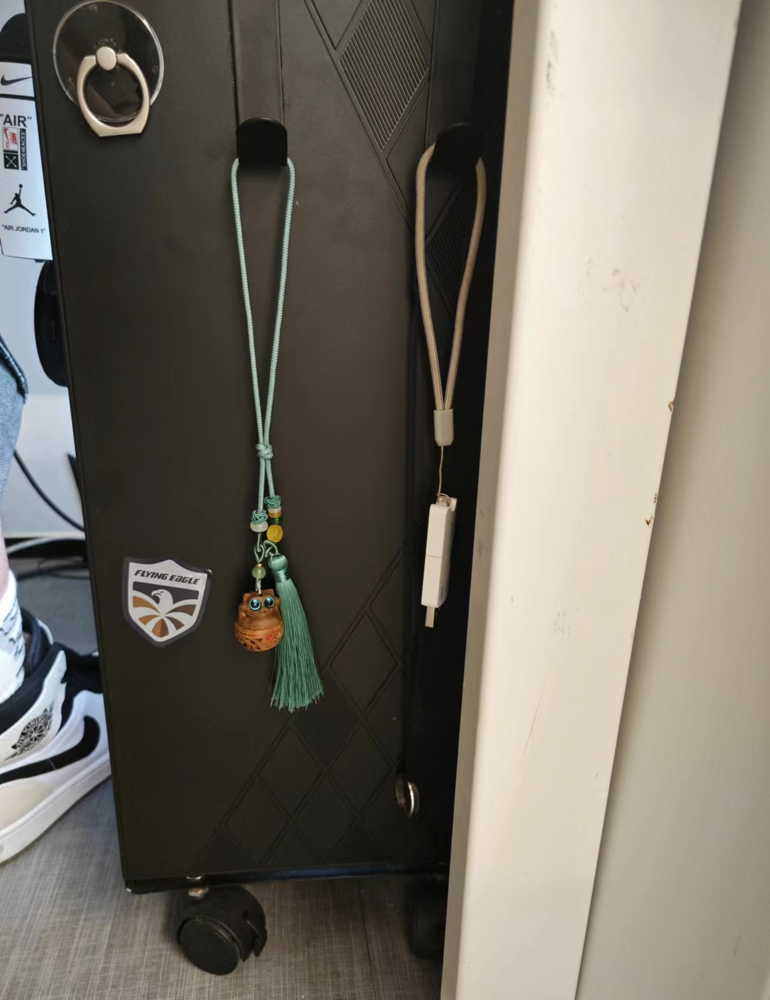
22:00 去吃海底捞，一开始上的电梯到不了4楼，于是去了5楼想走消防通道来4楼，但是4楼的门锁上了，只好继续往下走。
 吃完后，给同学送回家，到所里接近1点了，回宿舍赶快躺下，今天又是早睡的一天！！
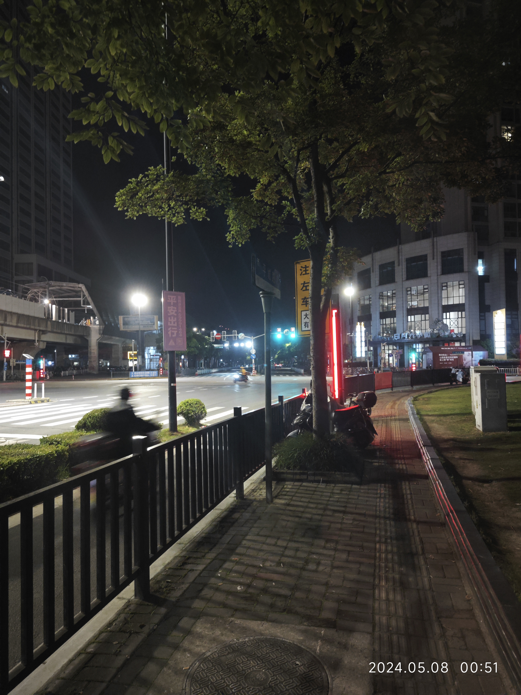
吃完后，给同学送回家，到所里接近1点了，回宿舍赶快躺下，今天又是早睡的一天！！
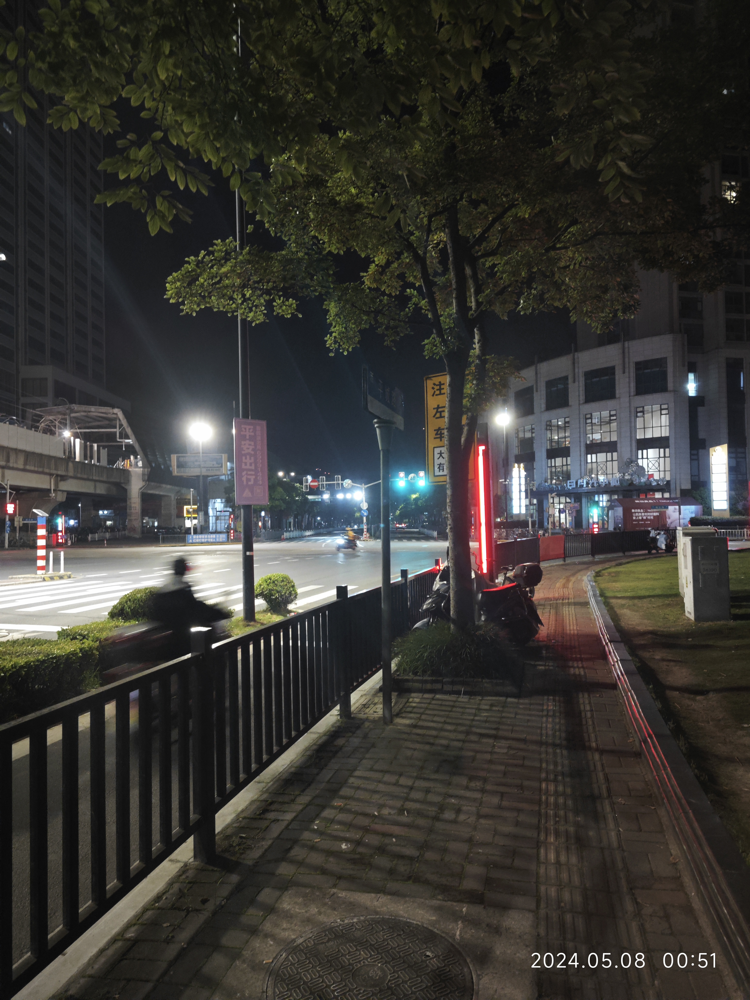
5.6
上午看yolov2在pynq上实现的项目。源码就和屎山一样。
中午遇见了一只小狗，感觉像仿真模拟出来的一样，好不真实。
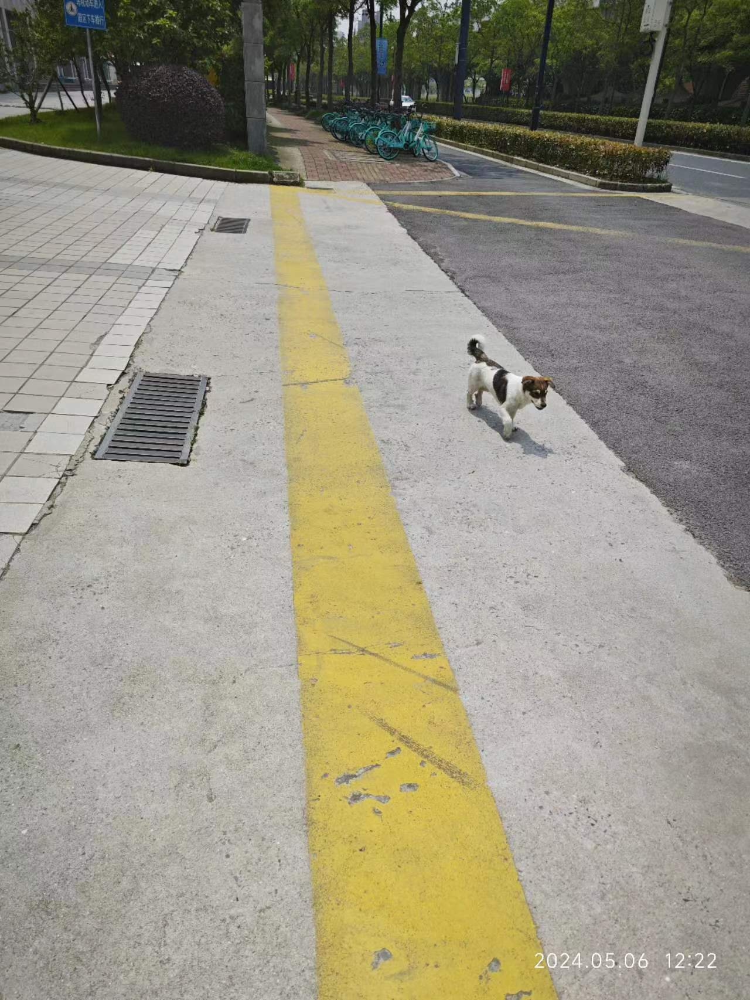
下午整理了一下关于PYNQ-Z2的硬件加速论文。
4月底投的海康威视，简历初筛之前需要做一个测评，内容记得一共有4部分，前两部分好像是行测内容、第三部分是智力题，最后是性格测试题。比较坑的是题目会有限时，时间一到系统自动跳到下一题，有些来不及算就到时间了。好在是顺利通过了，不然的话一年内都不能投海康了。接下来就是笔试了，但是啥也没准备，大概率是要挂了，全当是积累经验吧。但是为什么还没收到笔试通知啊。5.22华子终端BG机考19：00-21：00。
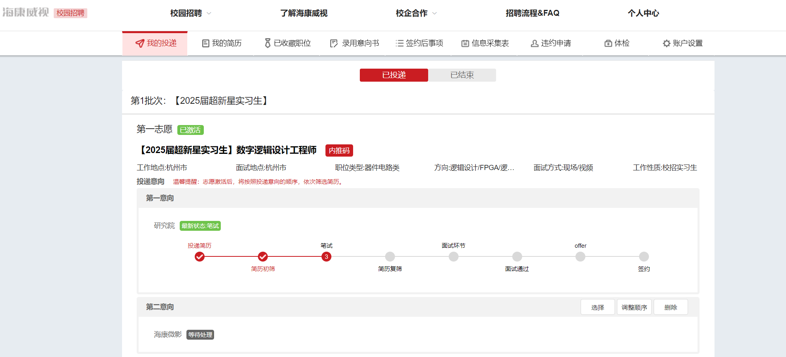
晚饭，罗森的牛肉蛋包饭
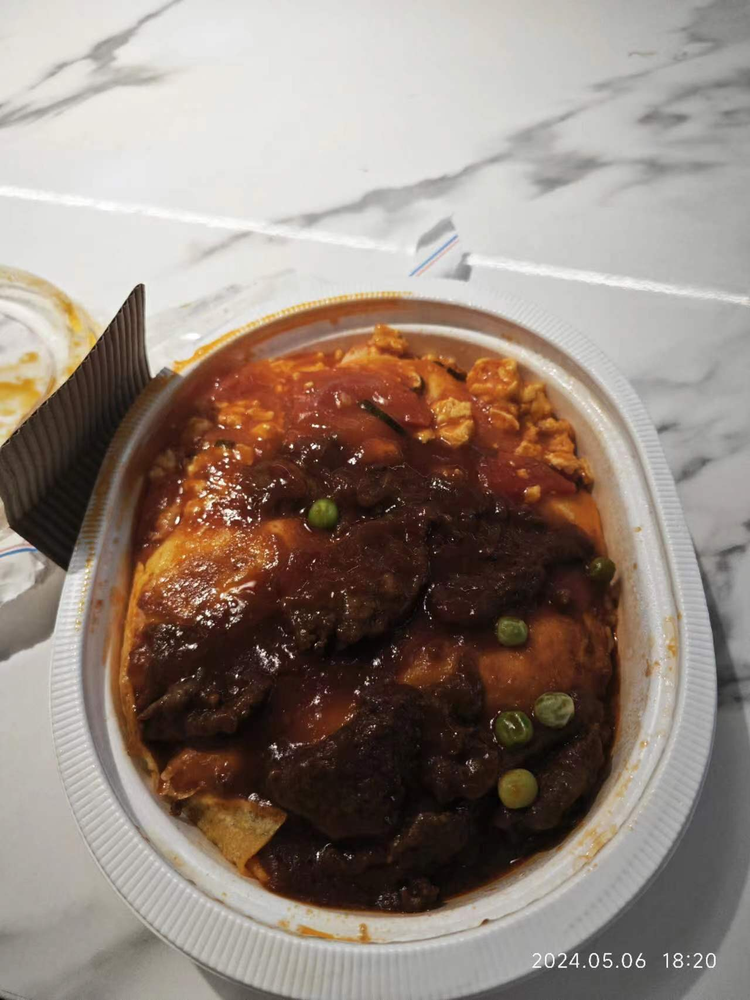
算法、ic、嵌入式软件
5.5
8：21起，早饭巴比的一个肉包，一杯红枣豆浆。看了看代码随想录。
中饭汉堡王，晚饭蒙自源的饭，吃完回办公室睡，睡醒了写下这句话，现在是19：15，开始学习。
以后晚上的时间都要用来准备找工作了，立帖为证。
现在是21：03学不动了，刷会儿bilbil。
啊???刷b站没几分钟，一抬头你怎么蓝了，不要生气啦，真爱还是你😥😥
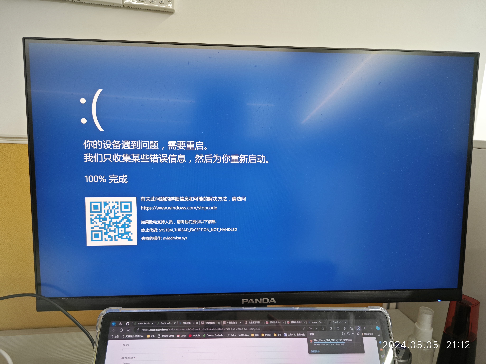
21：54 从全家回来，继续学。。。
5.4
昨晚十一点回宿舍，刷完牙就躺下了，一早起来已经是8：11.
上午继续在PYNQ-Z2上安装TensorFlow的目标中挣扎，最终得出的结论是不能继续在这个坑里呆下去了，也许以后会再来看看，但不是现在主要的问题。跟多细节在这里：在PYNQ上安装TensorFlow
中午在罗森、全家、盒马转了半小时，每天吃什么也是一个好问题，最后买了盒马的土豆红肠色拉和全家的炸鸡腿。
想哭，难吃到哭了，和蔬菜沙拉比差远了😭😭。
现在是21：20，学着学着就emo了，五一过去4天了，也在办公室里待了4天，但是怎么还是啥也没干的感觉。论文看着看着就迷失了，各种理论，设计细节，只是了解了个大概也没有深入推理。而是一个“我先选择相信你写的东西”这样的状态。看起来大家都是写个原理，然后写个表面的框架变化，不写具体的工程细节。CSDN、PYNQ Tutorial、Github翻了个遍，论文、UG、manual也是翻来翻去的看。不得不说，和我预想的一样，这确实是一个折磨人的过程，甚至内心早就变得毫无波澜。
回想大学的时候，我经常会提醒自己世界这么大，值得看值得做的事情有很多。不论是为了赚钱还是为了其他原因什么，我都不希望自己沉迷于技术，很多事情有一个表象的认识和稍微深入的了解就够了，没必要花时间去纠结于细节，毕竟时间是最宝贵的。然而太多时候不得不深入其中，去一行一行推导，一句一句斟酌。
okey-dokey，话说回来，毫无征兆地，路走着走着就给自己走窄了。但是想要拨乱反正是非常困难的，拥有这样的勇气其实是最简单的事情，而且仅仅是一个开始，需要更多考虑的是，你能接受最坏情况吗？你能像自己预想的那样，坚韧的去面对你的决定给你带来的各种困难吗？当你做出了一系列的事情后，最坏情况不得不发生时，你会怀着怎样的心情？不过我清楚的知道，即使再来一遍我还是会再一次的走上现在这条路，一切看起来难以避免的，时针走过了十二点，还是会一边又一边地走过十二点，这就是命运吧，明明知道却又是无法逃避的东西。
城市充斥着愚昧，毫无信仰的人群川流不息，生活在其中有什么意义？
答案是因为你的存在，无可替代的存在，因为伟大的戏剧正在进行，因为你可以奉献一首诗。
回宿舍做了两题室友给的行测。聊起了实习、软件，他们实验室都是找的软件算法岗，听完感觉所里在计算机行业还是有点地位的。至少比ic设计行业更有地位。他们一般用python。感觉主要是刷leetcode，和代码随想录，主要是数据结构和算法分析的内容，看起来我也应该去复习一下数据结构，投一个试试水。
数字ic前端设计–>更卷，但学了挺多
软件算法岗——->没有ic卷，有基础但不多
两手准备好累，毕竟还有课题要搞，课题又是深度学习模型硬件部署加速方向的（可以试试AI加速器架构设计、嵌入式软件开发、（大模型算子开发也是一个方向，但是可能差的有些远了））。
明天搞个面向软件算法岗的简历，海投试试。
5.3
6:14醒来，睡不下去了。脑子疼，难道要长脑子了？！


在PYNQ Support游荡了大半个上午。大多数人都使用官方提供的DPU、FINN、QNN来实现他们的目标检测任务(Can I import torch on PYNQ?。而这不是我想要的。A (No-Cross) Compile of PyTorch and OpenCV using AWS A1 instances非交叉编译PyTorch和OpenCV。好吧，它的目标平台是Zynq UltraScale+ (ZU+) 。
怎么才能在PYNQ-Z2上实现ps端的Yolov5的推理呢，怎么截断推理的过程，将数据流传到PL端加速，然后又应该如何知道何时计算结束，回传数据？
Yolov5采用Pytorch框架，但是torch不能在pynq-z2上安装。
难道真要用C++写yolov5正向推理？？或者试试用darknet框架？？又或者试试ONNX，onnxruntime(得去找几个轮子.whl).偶然间看到了yolov2_xilinx_fpga这个项目，得去试一下。(hook)在PYNQ-Z2上安装Tensorflow、keras？基于pynq的数字识别神经网络加速器设计。
下午：睡觉–刷qq–睡觉–刷qq，时序约束好像问的比较多，DC综合脚本还需要复习一下。另外RISC-V CPU的完善任务也一直拖着，实在没时间干了，希望能早点搞完吧。
晚上刷了一晚上qq。持续焦虑中……

5.2
忘了

At the beginning……
想起几个月前朋友喊我一起整个“学术装逼界面”，我才发现原来大学的时候已经做过一个，只是之后一直没有真正写过什么内容，慢慢的就被遗忘了。hhhhhhh，在我的意料之内，毕竟我是从来不喜欢写那种看起来花哨整洁的笔记的，因为我懒。
先来说说为什么要回过头来重新做这件事吧：可能最大的原因也是为了展示自己的学习内容吧(为了装逼😜)，正好自己这两个月来也确实记录了一个非常凌乱的文档记录(各种教程、手册的地址)，想想也是该整理整理了。最后一个理由是顺便记录生活核真实的想法。
人生就像在一本空白草稿本上记录着自己的爱情、金钱、事业、家庭、生活和梦想。也许需要翻过大半本才能看见一段精彩的话。不可置疑的，我们会遇到各种各样的困难和难以决定的选择。也许我们过去的决定在那时看起来是最好的选择，但是仍然可能给未来埋下隐患，成为将来不得不面对的一个棘手的问题。对于我自己，希望不要受到太多世俗的影响，选择伟大，选择信仰。做一个勇敢的人，坚持走下去，走到尽头，无论路的尽头是花海，还是悬崖，勇敢的跳下去吧，拥抱生命也拥抱死亡。（为什么标点符号看起来是浮着的😳😳，插个眼，以后有时间再改吧😭😭😭）